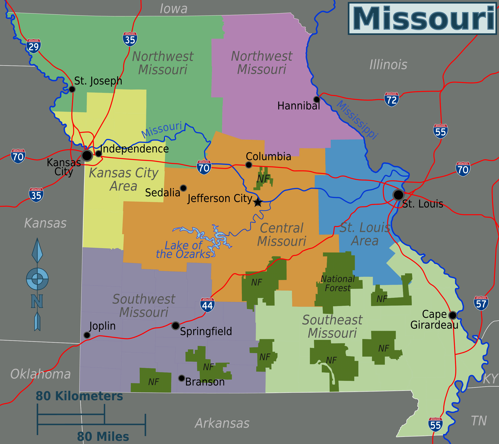

Missouri is a state in the Midwestern region of the United States. The state entered the union on August 10,
1821 (Wikipedia, 2023).

The latin on the flag of Missouri translates as, "The health (welfare, good, salvation, felicity) of the
people should be the supreme law." (Wikipedia, 2023)
Missouri is home to many caves. Almost 6,400 caves have been found in the state! (Missouri State Parks, 2023)
Many famous people were born in and/or grew up in Missouri (TheFamousPeople, 2023):
- Mark Twain (Born in Florida, MO)
- Maya Angelou (Born in St. Louis, MO)
- Chuck Berry (Born in St. Louis, MO)
- John Goodman (Born in Affton, MO)
- Evan Peters (Born in St. Louis, MO)
- Eminem (Born in St. Joseph, MO)
References
- TheFamousPeople. (2023). Famous People From Missouri. Retrieved from
https://www.thefamouspeople.com/missouri.php
- Wikipedia. (2023). Missouri. Retrieved from https://en.wikipedia.org/wiki/Missouri
- Wikipedia. (2023). Flag of Missouri. Retrieved from https://en.wikipedia.org/wiki/Flag_of_Missouri
- Missouri State Parks. (2023). Cave Tours. Retrieved from https://mostateparks.com/activity/cave-tours